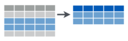

In this tutorial, we will go over an extremely useful framework for data wrangling “Tidy Data” by Hadley Wickham (paper). What is tidy data? Tidy data is a framework that helps structure and shape your data to make it easier to analyze and visualize.
Tables or dataframes that are “tidy” meets the following criteria:
All data that don’t meet the criteria are considered “messy”. In the following lessons, we will go over how to tidy data using this framework in Python.
I will assume you have the following Python knowledge.:
By the end of the tutorial, you will know how to reshape your data into a tidy format using the following data shaping operations:
Before we begin I’d like to point out the tutorial format. We will mix narrative, code exercises, and visuals to teach you the various operations to tidy data. For code exercises, you will see:
A Python code exercise:
# type in Python code and execute
2 + 2Sometimes we will include visuals to help you grok the various tidy data operations that are often difficult to mentally visualize such the one below on subsetting a dataframe:

Now, we will go over the most common types of messy data and learn how to tidy them using Python’s pandas library.
It is common to find real world datasets in which variables do not reside in a single column, but are spread across columns. The primary reason for this is the ease of data entry as you don’t have to repeat other variables. But, this form can make it difficult to analyze and feed into statistical models and data visualization libraries which usually expect a tidy input: rows are observations, columns are variables.
We will use data on income and religion in the United States from the Pew Research Center to illustrate how to work with columns that contain values, rather than variables.
I have already loaded up the data for you to a variable called pew. Run the exercise below to take a peek at the data:
pewNotice how the income variables <$10K-20K, ... , 150K, Don't Know/refused is spread across columns. This is what’s known as a “wide” format This format is not inherently bad, but since functions expect a tidy input, a variable spread across columns makes it difficult to extract frequency for each value of the income. So, we’re going to reshape the data into a “long” format by “melting” the income columns into a single income variable instead.
In pandas, there is a function that will help us reshape pew into a tidy data format. It takes a few parameters we care about:
id_vars is either a list, tuple, or a numpy.ndarray that represents the variable that will remain as is.value_vars identifies columns you wish to “melt down” (or unpivot). By default, it will melt all the columns not specified by id_vars.var_name is a string for the new column name when the value_vars is melted down. By default, it will be named variable.value_name is a string for the new column name that represents the values for the var_name. By default, it will be named value.Since we want to only retain religion column as is, it will serve as the only item for id_vars. We want as output 3 columns in total:
Let’s run this code using melt to demonstrate moving from a wide data to long data format:
pew_long = pd.melt(pew, id_vars='religion')
pew_long